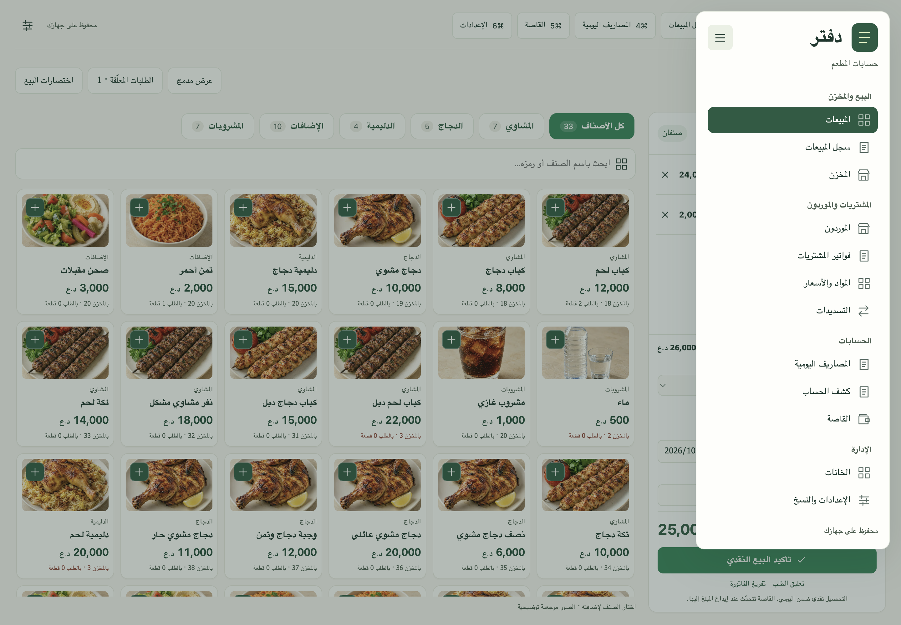

Historical 19-phase version. Superseded by the current 12-phase plan.
Phase 01 — Design system and responsive components
Status: planned, not implemented. Date: 2026-10-27. Depends on: 00.
Outcome: A Flutter component gallery matching the current visual language.
Master plan · Screenshot gallery · Design contract · Accounting contract
Work to deliver
- Implement extracted colors, radii, spacing, page gutters, typography roles, Latin tabular financial values, Arabic labels and RTL reading order.
- Build the actual shared components: toolbar and shortcuts, buttons and icons, inputs, money/quantity/date fields, selects, tables, pagination, filters, badges, empty states, toast/status, standard and wide dialogs.
- Retain fluid full-width pages, catalog on the left and bill on the right, modest gutters, compact related totals, popover navigation and centered dialogs. Reuse the frozen product thumbnails and icon paths.
- Reproduce the current narrow reference at 390×844, then verify safe areas, keyboard open, scrollable form content, visible save/cancel, back gesture and large text on Android and iPhone.
- Choose a licensed Arabic font and establish a golden baseline per platform. Record glyph/rendering differences explicitly; do not claim raw macOS pixels can be identical on every platform.
Acceptance for this feature
Screenshot references
These are current Electron screenshots with synthetic data, except the explicitly labelled design board and report HTML. They specify composition and current behavior; they do not prove a Flutter implementation. Phone captures are narrow current-UI references, not native Android/iPhone captures. See the capture contract before comparing pixels.


Handoff for implementation
Read the master plan, this phase, its screenshot set and the linked source evidence. Implement phase 01 only after its dependencies are complete. First report any source/reference mismatch. Use the current design without additional features; ask for the owner’s phase-specific edits when beginning the work. Keep the Electron app and real records safe. End with the working feature, tests, Flutter screenshots, documented differences and updated completion evidence. Do not mark planned work as implemented.